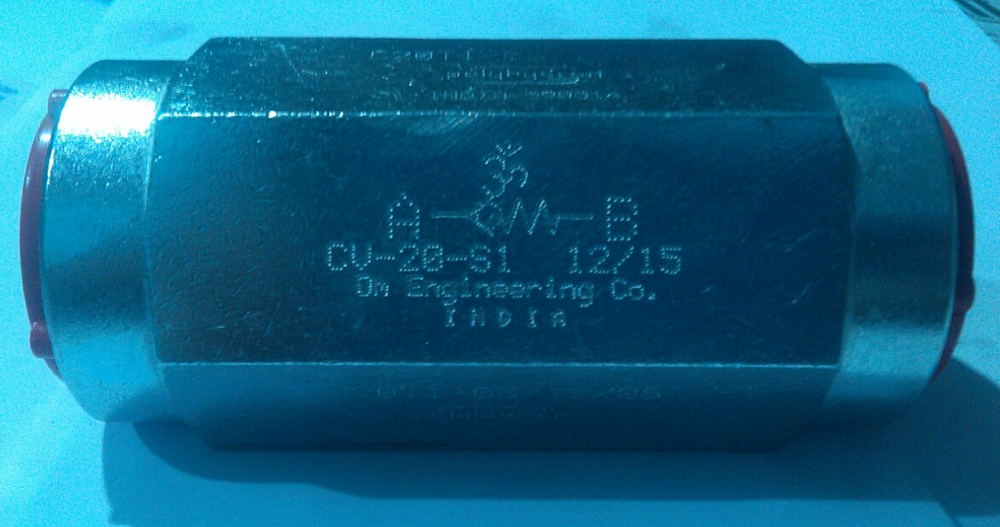
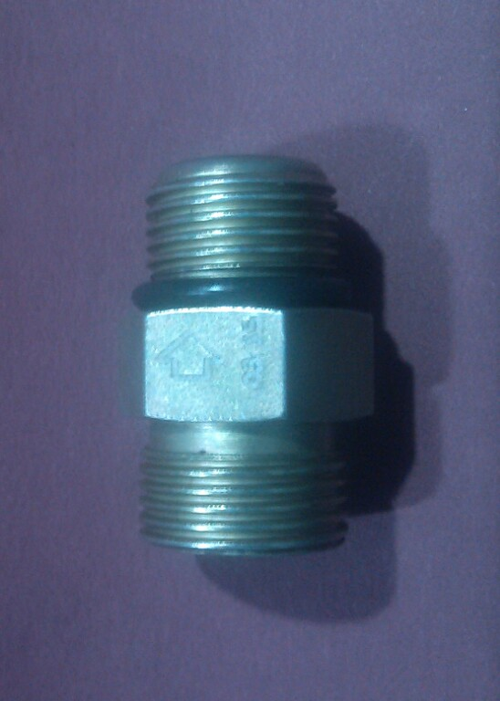
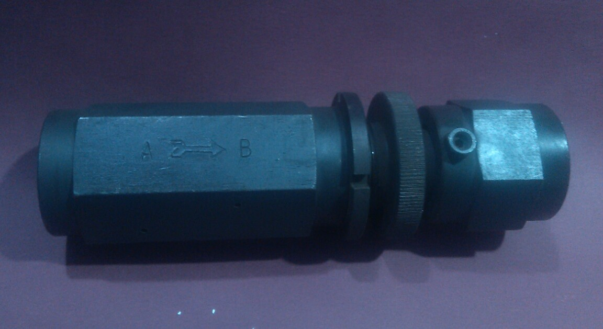

| As a part of innovation and research, based on our customer feedback these are few custom products that were supplied in the recent past. We take any such or others similar orders as well. | |
| Check Valves with Higher cracking pressure. |  |
| Double ended male check valves. |  |
| Adjustable check valves. |  |